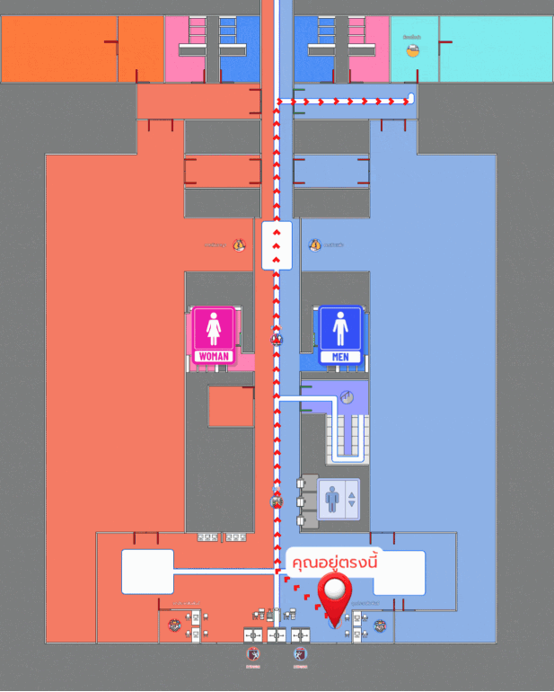

🏁 เริ่มจาก: ประชาสัมพันธ์ (ชั้น 1)
⚠️ เดินไกลแล้ว ลองกด Checkpoint เพื่อรีเซ็ตตำแหน่ง
✅ รีเซ็ตตำแหน่งแล้ว
ความไว
1.1
ความยาวก้าวที่ตั้งไว้: 0.7 ม./ก้าว — ลากแถบด้านบนถ้าเดินแล้วจุดไม่ขยับ (เลื่อนซ้าย = ไวขึ้น)